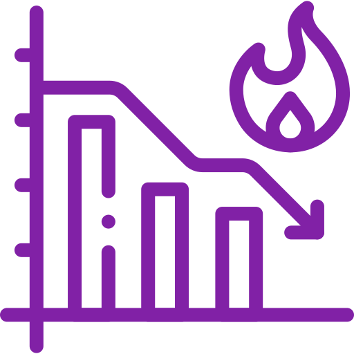

ARTEFATOS DO SCRUM
Introdução
Trazendo transparência e coordenação para o desenvolvimento do produto.
O Scrum possui alguns artefatos que dão uma visão do andamento do projeto e das Sprints. Os artefatos
de Scrum são:
- Product Backlog
- Sprint Backlog
- Product Increment
- Definition of Done
- Burndown Charts
Product Backlog
"Agregando mais valor ao produto."
Product Backlog é uma lista de itens priorizados que descrevem as funcionalidades e requisitos de um produto a ser desenvolvido em metodologias ágeis de desenvolvimento de software, como o
Scrum.
Cada item é descrito por meio de user stories, que são narrativas curtas e simples que
descrevem o que o usuário deseja e o que o produto deve fazer para atender a essa necessidade.
As user stories podem ser alteradas durante o projeto, já que a metodologia ágil prevê a adaptação
às mudanças e necessidades do cliente.
Por isso, o Product Backlog é considerado um documento vivo
e dinâmico, que pode ser atualizado a qualquer momento de acordo com as mudanças de prioridades
e necessidades do cliente.
Essa flexibilidade permite que o produto final atenda de forma mais
eficiente às necessidades e expectativas do cliente
Além disso, é importante ressaltar que o Product Owner é responsável por gerenciar o Product
Backlog e garantir que as alterações sejam feitas de forma estratégica e organizada, levando em
consideração o impacto das mudanças nas entregas e no prazo do projeto.
O objetivo é manter o
Product Backlog sempre atualizado e alinhado com a visão e estratégia do produto, garantindo que o
produto atenda às necessidades do cliente de forma eficaz.
Definition of Done
"Trazendo consistência e objetivos."
O Scrum não define quaisquer práticas de engenharia de software para o Development Team, mas
recomenda sempre o uso de práticas ágeis que garantam a qualidade do produto desenvolvido.
Assim,
mediante as práticas adotadas pelo Time, tem-se a definição do que é uma funcionalidade “pronta”,
código testado unitariamente, código testado mediante teste de aceitação, código revisto e assim por
diante.
No mínimo, o Definition of Done deve conter o “potencialmente entregável”.
Uma funcionalidade só é considerada pronta se tiver passada por todas as etapas definidas pelo Time
de Desenvolvimento, assim também sendo necessária a clara noção de todo o Time Scrum do que é
considerado pronto. Uma funcionalidade inacabada volta ao Product Backlog para ser continuada na
próxima Sprint.
Sprint Backlog
"Tornando cada minuto produtivo."
Sprint Backlog é uma lista de tarefas que o Time de Desenvolvimento deve realizar durante uma
sprint, que é um período de tempo curto e definido em metodologias ágeis de desenvolvimento de
software, como o Scrum.
Essa lista é criada a partir dos itens do Product Backlog que foram priorizados
para o sprint em questão
O Sprint Backlog é uma ferramenta essencial para o Scrum, pois permite que o Time de
Desenvolvimento tenha uma visão clara das tarefas a serem realizadas durante o sprint, facilitando o
planejamento, execução e acompanhamento do trabalho.
Além disso, o Sprint Backlog é atualizado
diariamente durante a reunião diária (Daily Scrum), permitindo que o time ajuste as tarefas de acordo
com as necessidades e mudanças que surgirem durante o sprint.
Product Increment
"A retrospectiva de seu progresso."
Ao final de cada Sprint, o Time de Desenvolvimento entrega um Incremento do produto
desenvolvido, essa entrega é importante pois permite o Product Owner ver o trabalho realizado e
também já pense em outras possibilidades até da próxima Sprint.
Vale lembrar que o Incremento é
algo potencialmente entregável, que pode chamar a atenção do cliente, por isso é importante um
bom trabalho do Time de Desenvolvimento para que o Incremento contenha o menor número de
erros possível.
Burndown Chart
"Medindo a distância do objetivo."
Burndown Chart é uma ferramenta gráfica utilizada em metodologias ágeis de desenvolvimento de software, como o Scrum, para medir e acompanhar o progresso do Time de Desenvolvimento em relação às metas estabelecidas para o sprint.
O gráfico mostra a quantidade de trabalho que ainda precisa ser realizado, comparando com o tempo disponível para conclusão do sprint.
Através do Burndown Chart, é possível visualizar a evolução do trabalho, identificar possíveis atrasos e planejar as atividades que ainda precisam ser realizadas.
Ele também ajuda o Time de Desenvolvimento a manter o foco nas tarefas mais importantes e a tomar decisões de forma mais eficiente, permitindo que o sprint seja concluído com sucesso.
O Burndown Chart é atualizado diariamente pelo DevTeam, de forma que ele possa monitorar seu progresso em relação às metas estabelecidas para o sprint.
Dessa forma, ele se torna uma ferramenta importante para o gerenciamento do tempo e a tomada de decisões eficientes durante o desenvolvimento do produto.

{% endblock %}